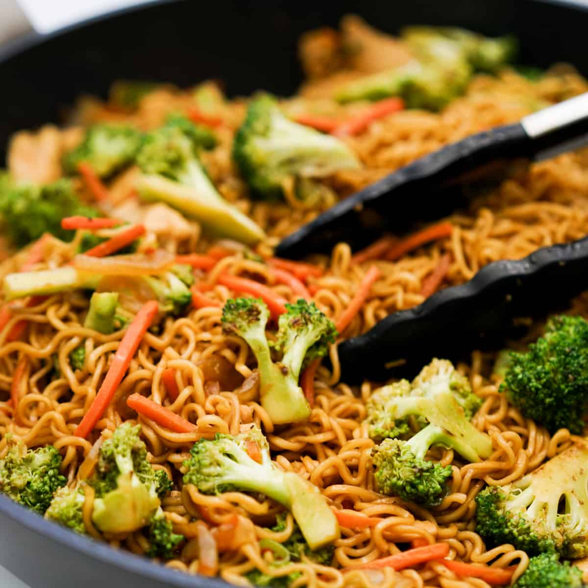

Welcome to Adora's cooking blog!
Hello! I'm a college student trying to learn how to cook and take better care of myself. I wanted to document my progress with my meals as well as rate different recipes that I try. I hope that you can relate to and learn from my cooking mistakes :)
2024 Entries
February 8th: Spaghetti

I made spaghetti today with sauce I bought from the store. It was the Signature Select brand, and I really enjoyed it. When the spaghetti was almost done boiling, I put some of the tomato sauce in a pan to heat up. Then, after the sauce had been on the heat for a few minutes, I put in the spaghetti. Cooking it in a pan together helps reduce the sauce and really allowed for the sauce to coat the noodles!
February 5th: Cookies

I tried a new cookie recipe off of How to Cook That's YouTube video. They have chocolate chips and pretzels - so good! I've been watching How to Cook That for a long time, and I'm so happy I got to bake one of her recipes :). I would highly recommend her channel for any bakers.
January 29th: Stir-Fried Ramen

Today, I made stir-fried ramen! It's a dish my mom used to make me, and I tried to recreate it. I cooked the ramen noodles first in the microwave with none of the seasonings. Then I mixed some oil with the seasoning packet. I combined the seasoning packet + oil mix with the noodles in a pan with hot oil, and stir-fried it until it looked good.